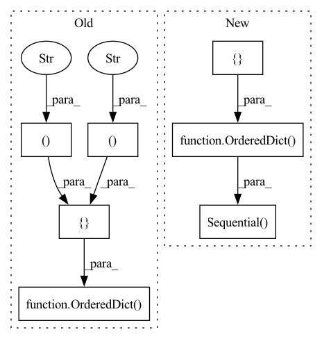

Pattern ID :12111

Before Change
squeezed_channels = make_divisible(int(channels * ratio), 8)
gating_fn = gating_fn if gating_fn else _SE_GATING_FN
self.se = nn.Sequential(OrderedDict([
("pooling", nn.AdaptiveAvgPool2d((1, 1))),
("reduce", Conv2d1x1(channels, squeezed_channels, bias=True)),
("relu", inner_activation_fn(inplace=True)),
("expand", Conv2d1x1(squeezed_channels, channels, bias=True)),
("sigmoid", gating_fn()),
]))
def forward(self, x):
return x * self.se(x)
After Change
squeezed_channels = make_divisible(int(channels * ratio), _SE_DIVISOR)
gating_fn = gating_fn if gating_fn else _SE_GATING_FN
layers = OrderedDict([])
layers["pooling"] = nn.AdaptiveAvgPool2d((1, 1))
layers["reduce"] = Conv2d1x1(channels, squeezed_channels, bias=True)
if _SE_USE_NORM:
layers["norm"] = nn.BatchNorm2d(squeezed_channels)
layers["relu"] = inner_activation_fn(inplace=True)
layers["expand"] = Conv2d1x1(squeezed_channels, channels, bias=True)
layers["sigmoid"] = gating_fn()
self.se = nn.Sequential(layers)
def forward(self, x):
return x * self.se(x)
In pattern: SUPERPATTERN
Frequency: 3
Non-data size: 7
Instances
Fragment ID: 40934640
Project Name: ffiirree/cv-models
Commit Name: e622b26dcf62b8ec88e80183f5ba0cef941cb223
Time: 2021-09-13
Author: ice_qi@163.com
File Name: models/core/blocks.py
M Class Name: SEBlock
N Class Name: SEBlock
M Method Name: __init__(5)
N Method Name: __init__(5)
M Parent Class: nn.Module
N Parent Class: nn.Module
M File Name: models/core/blocks.py
N File Name: models/core/blocks.py
M Start Line: 447
M End Line: 456
N Start Line: 462
N End Line: 475
'>
Before Change
layer = int(layer)
if sub_type == "s":
_model = ResNetS(nclasses=self.num_classes)
self.features = nn.Sequential(OrderedDict([
("conv1", _model.conv1),
("bn1", _model.bn1), // nn.BatchNorm2d(64)
("relu", nn.ReLU(inplace=True)),
// nn.MaxPool2d(kernel_size=3, stride=2, padding=1)
("layer1", _model.layer1),
("layer2", _model.layer2),
("layer3", _model.layer3),
("layer4", _model.layer4)
]))
self.classifier = nn.Sequential(OrderedDict([
("fc", _model.linear) // nn.Linear(512 * block.expansion, num_classes)
]))
After Change
def __init__(self, layer: int = 18, sub_type: str = "", **kwargs):
super().__init__(**kwargs)
layer = int(layer)
module_list: list[nn.Module] = []
if sub_type == "s":
_model = ResNetS(nclasses=self.num_classes)
module_list.append(("conv1", _model.conv1))
module_list.append(("bn1", _model.bn1))
module_list.append(("relu", nn.ReLU(inplace=True)))
self.classifier = nn.Sequential(OrderedDict([
("fc", _model.linear) // nn.Linear(512 * block.expansion, num_classes)
]))
else:
ModelClass: Callable[..., torchvision.models.ResNet] = getattr(torchvision.models, "resnet" + str(layer))
_model = ModelClass(num_classes=self.num_classes)
if sub_type == "comp":
conv1: nn.Conv2d = _model.conv1
_model.conv1 = nn.Conv2d(conv1.in_channels, conv1.out_channels,
kernel_size=3, stride=1, padding=1, bias=False)
module_list.append(("conv1", _model.conv1))
module_list.append(("bn1", _model.bn1))
module_list.append(("relu", _model.relu))
else:
module_list.append(("conv1", _model.conv1))
module_list.append(("bn1", _model.bn1))
module_list.append(("relu", _model.relu))
module_list.append(("maxpool", _model.maxpool))
self.pool = _model.avgpool // nn.AdaptiveAvgPool2d((1, 1))
self.classifier = nn.Sequential(OrderedDict([
("fc", _model.fc) // nn.Linear(512 * block.expansion, num_classes)
]))
// block.expansion = 1 if BasicBlock and 4 if Bottleneck
// ResNet 18,34 use BasicBlock, 50 and higher use Bottleneck
module_list.extend([("layer1", _model.layer1),
("layer2", _model.layer2),
("layer3", _model.layer3),
("layer4", _model.layer4)])
self.features = nn.Sequential(OrderedDict(module_list))
class ResNet(ImageModel):
'>
Fragment ID: 40934642
Project Name: ain-soph/trojanzoo
Commit Name: b51d677a2663de1e7bffed94a61a5b4c88074e76
Time: 2021-04-03
Author: ain-soph@live.com
File Name: trojanvision/models/resnet.py
M Class Name: _ResNet
N Class Name: _ResNet
M Method Name: __init__(3)
N Method Name: __init__(3)
M Parent Class: _ImageModel
N Parent Class: _ImageModel
M File Name: trojanvision/models/resnet.py
N File Name: trojanvision/models/resnet.py
M Start Line: 21
M End Line: 66
N Start Line: 20
N End Line: 54
'>
Before Change
class Generator(nn.Module):
def __init__(self, channels_noise, channels_img, features_g):
super(Generator, self).__init__()
self.net = nn.Sequential(OrderedDict([
// Input: N x channels_noise x 1 x 1
("block1", self._block(channels_noise, features_g * 16, 4, 1, 0)), // img: 4x4
("block2", self._block(features_g * 16, features_g * 8, 4, 2, 1)), // img: 8x8
("block3", self._block(features_g * 8, features_g * 4, 4, 2, 1)), // img: 16x16
("block4", self._block(features_g * 4, features_g * 2, 4, 2, 1)), // img: 32x32
("transpose_conv_out", nn.ConvTranspose2d(
features_g * 2, channels_img, kernel_size=4,
stride=2, padding=1, bias=False)),
// Output: N x channels_img x 64 x 64
("tanh", nn.Tanh()),
]))
def _block(self, in_channels, out_channels, kernel_size, stride, padding):
return nn.Sequential(OrderedDict([
After Change
(f"block{a}", self._block(features_g * 2**b, features_g * 2**(b-1), 4, 2, 1))
for (a,b) in zip(range(1,n_blocks+1), range(n_blocks+1,1,-1))][1:])
full_list = [
// Input: N x channels_noise x 1 x 1
*block_list,
("transpose_conv_out", nn.ConvTranspose2d(
features_g * 2, channels_img, kernel_size=4,
stride=2, padding=1, bias=False)),
// Output: N x channels_img x img_size x img_size
("tanh", nn.Tanh()),
]
self.net = nn.Sequential(OrderedDict(full_list))
def _block(self, in_channels, out_channels, kernel_size, stride, padding):
return nn.Sequential(OrderedDict([
("transpose_conv", nn.ConvTranspose2d(
'>
Fragment ID: 40934651
Project Name: ebartrum/lightning_gan_zoo
Commit Name: 33cb57daa95823255bd830c1a9686d2515df75af
Time: 2021-04-22
Author: edward.bartrum@gmail.com
File Name: core/models/standard_networks.py
M Class Name: Generator
N Class Name: Generator
M Method Name: __init__(5)
N Method Name: __init__(4)
M Parent Class: nn.Module
N Parent Class: nn.Module
M File Name: core/models/standard_networks.py
N File Name: core/models/standard_networks.py
M Start Line: 58
M End Line: 69
N Start Line: 56
N End Line: 75